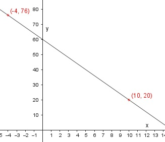

Lineare Funktionen Aufgabe 7 Ergänzen Sie die Wertetabelle für den Graphen der Funktion, und zeichnen Sie den Graphen. y = -4x + 60 x -4 10 y 76 20 x = -4 ---> y = (-4)*(-4) + 60 = 76 x = 10 ---> y = -4 * 10 + 60 = 20 